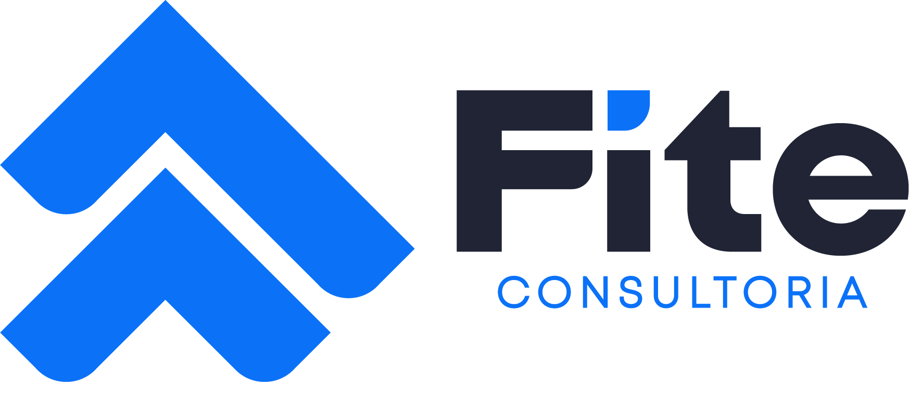

Ergonomia e AEP / AET
Análise dos postos e processos para orientar melhorias e a gestão dos riscos ergonômicos.
Saiba mais ↗
Solução FITE · Riscos psicossociais (NR-1)
Programa de gestão e coordenação dos riscos psicossociais relacionados ao trabalho, integrado ao gerenciamento de riscos ocupacionais da empresa.
O que está incluso
A NR-1 inclui os fatores de riscos psicossociais relacionados ao trabalho no Gerenciamento de Riscos Ocupacionais (GRO). A FITE apoia a empresa na identificação, avaliação e controle desses fatores, com registros que se integram ao PGR. Entenda os riscos psicossociais ↗
Outras soluções
Análise dos postos e processos para orientar melhorias e a gestão dos riscos ergonômicos.
Saiba mais ↗Pausas ativas e movimento na rotina, com atividades orientadas para as equipes.
Saiba mais ↗Massagem rápida na cadeira, no próprio ambiente de trabalho, para aliviar tensões durante a rotina.
Saiba mais ↗Programas de prevenção e cuidado conectados às necessidades dos colaboradores.
Saiba mais ↗Conteúdo e atividades para aproximar as pessoas da saúde e da prevenção.
Saiba mais ↗Avaliação e adaptação de postos e processos para apoiar a reintegração ao trabalho.
Saiba mais ↗Avaliação, implementação e acompanhamento de tecnologias nas operações.
Saiba mais ↗Desenvolvimento técnico e visão consultiva para profissionais de saúde do trabalhador.
Saiba mais ↗Priorização de ações, indicadores e acompanhamento para apoiar a gestão.
Saiba mais ↗